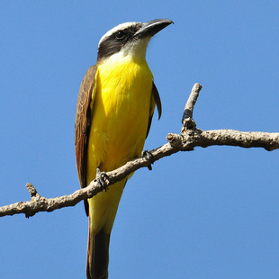

Because he hides himself through dense leaves, the male sings to mark the territory
and call the ladies in (different from other birds who goes to their place). I only managed to
identify through the recording, cause I for sure couldn't see it.
I really like the way it trembles when singing, that the couple shares the parental demands and look
the same between sexes.

Neinei
Boat-billed flycatcher
I spent 10 minutes trying to see this bird. It's so loud that I can't even picture
where the sound comes from due to the forest echo. It looks like a slimmer Bem-te-vi.
Thing is, he just doesn't stop. While working on this site I have to ocasionally leave my backyard cause
it won't
stop calling every two minutes for at least an hour. After that's over it just randomly shouts (the
recorded bit).